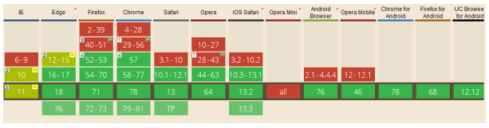

El proposito de este sitio es elaborar recursos educativos digitales que permitan dinamizar las
estrategias de aprendizaje de las instituciones educativas sobre algunos temas de diseño de sitios web.
Aqui hablaremos principalmente de dos temas como lo son las Etiquetas semánticas y CSS Grid
Etiquetas semánticas HTML5
Imagen 1. Etiquetas semánticas HTML5

Las etiquetas semánticas son entendidas por los lectores de pantalla y otra herramienta que lea los
sitios web, el uso de estas permite aumentar la accesibilidad y mejorar el posicionamiento
en los buscadores.
Estas son:
Header:
Esta etiqueta representa la información introductoria del sitio web y pueden ser aplicadas en
diferentes secciones del documento, su objetivo es el de contener la cabecera de una sección. Esta
tambien puede ser utilizada para: agrupar indices, formularios de busqueda,
logos, etc.
Normalmente es usada para incluir los encabezados, indice de una sección, un formulario de
busqueda, logos importantes, etc.
Ejemplo:
Imagen 2. Ejemplo etiqueta Header
nav:
Esta etiqueta nos indica una seccion de enlaces con propositos de navegacion dentro del sitio web
como menus o indices. Dentro de estas etiquetas unicamente deben ir los principales bloques
de navegacion por la pagina, a excepcion de aquellos enlaces que suelen aparecer en el
pie de pagina ya que estos no deben ser incluidos en estas etiquetas.
Ejemplo:
Imagen 3. Ejemplo etiqueta nav
Section:
Esta etiqueta es una agrupacion tematica del contenido, tipicamente con un encabezado que representa
una seccion general del documento, son utilizadas para construir varios bloques de
contenido que comparten una caracteristica especifica como un grupo de noticias, paginas de
un libro, capitulos, articulos, etc.
Ejemplo:
Imagen 4. Ejemplo etiqueta section
Article:
Esta etiqueta Representa un contenido independiente de informacion relevante como por Ejemplo, cada
articulo de un periodico, cada entrada de un blog o un comentario.
Estas pueden ser anidadas y usadas para mostraruna lista dentro de otra lista de items relacinados
como por ejemplo, comentarios de usuarios en entradas de blogs.
Ejemplo:
Imagen 5. Ejemplo etiqueta Article y Aside
Aside:
Esta etiqueta representa información que se encuentra relacionada con el contenido principal de la
pagina pero que no hace parte del mismo como por ejemplo: glosario, enlaces a paginas
relacionadas, barras laterales, publicidad, etc.
Ejemplo:
Ver imagen 5
Footer:
Esta etiqueta se usa para representar un pie de pagina y contiene informacion adicional sobre el
cuerpo del documento como por ejemplo: autor, terminos de uso, licencia, etc.
Ejemplo:
Imagen 7. Ejemplo etiqueta footer
Tomado de:
Gauchat, J. D. (2012). El gran libro de HTML5, CSS3 y Javascript. Marcombo.
https://books.google.es/books?hl=es&lr=&id=szDMlRzwzuUC&oi=fnd&pg=PA1&dq=etiqueta+header&ots=0CoFX0wyOi&sig=LaNePLPJEtl6zyF30W8om3uFfZU#v=onepage&q=etiqueta%20header&f=false
https://www.arumeinformatica.es/blog/html5-nuevas-etiquetas-semanticas-y-estructurales/2
CSS Grid
Imagen 8. Ejemplo CSS Grid

En el desarrollo web se utiliza el grid para diceñar la estructura y organizar el contenido de la
web. El grid es una cuadrícula sobre la que se distribuyen los distintos elementos que componen la
web, tiene caracteristicas utiles que van desde el posicionamiento a la capacidad de respuesta
y cambios de diseño. Muchos frameworks y librerías utilizan un sistema grid donde
definen una cuadrícula determinada, y modificando los nombres de las clases de los elementos HTML,
podemos darle tamaño, posición o colocación.
caracteristicas del CSS grid
1. La facilidad de posicionamiento:
CSS Grid tiene muchas opciones sintácticas sobre cómo posicionar el contenido, propiedades que toman
números de línea y también pueden abarcar el contenido a través de múltiples celdas. uno
puede usar nombres de área autodefinidos para asignar contenido, como por ejemplo la
propiedad "Grid-área" (Área de cuadricula) para este propósito. Con Grid Uno puede abarcar filas y
columnas, creando diseños bidimensionales, el más básico es dando una definición de punto de
inicio y fin a la columna y así mismo con la fila. A continuación se podra evidenciar los
ejemplos de posicionamiento.
Imagen 9 Captura de salida de los ejemplos dados anteriormente

Imagen 9.1 Codigo simple (html) usado en los ejemplos anteriores
.
2.Ubicación automatica:
No todos los elementos de una cuadrícula deben tener una posición definida. Esto se maneja llenando
el espacio libre en el diseño de la cuadrícula con esos elementos indefinidos.
Permitiendo asi contenido dinámico, colocación y pedido sin ninguna intervención (Ver imagen 9.2 y 9.3).
3. Repetir plantilla
Las filas y columnas se pueden definir utilizando la palabra clave repeat. De esta manera se crea un
ahorro de tiempo y espacio. Este es un método para colocar varias filas o columnas una al lado
de la otra con el mismo tamaño (Ver codigo css en la imagen 9.4, 9.2 y 9.3)
4. posicionamiento absoluto
Los elementos se pueden colocar especificamente en una cuadricula css. Para esto se elige una
posicion de anclaje al que esta conectado el elemento. El atributo en cuestión es "position:
absolute"; el ancla se puede elegir con, por ejemplo, las propiedades "top", "bottom", "left" o
"right". (Ver codigo css en la imagen 9.5, captura de pantalla de salida 9.2 y codigo
html correspondiente 9.3)
Imagen 9.2 Captura de pantalla de salida
Imagen 9.3 Codigo html correspondiente
Imagen 9.4 Ejemplo donde se crea una plantilla con la palabra clave "repeat", lo que permite rapido diseño formal
Imagen 9.5 Ejemplo de una imagen posicionada absolutamente en una cuadrícula CSS
Imagen 9.6 Código HTML simple usado para los ejemplos receptivos
5. Area de cuadricula
El posicionamiento también se puede hacer usando áreas. En lugar de solamente usar números para
enumerar, se pueden crear nombres fijos con el atributo "grid-template-areas". Los nombres se
asignan simplemente colocando los alias de una manera similar a la Cuadrícula que es muy intuitiva.
Las áreas también pueden abarcar varias celdas [Andrew 2019]. (ver imagen 9.8 para ver pantalla de salida).
6. Columnas y filas de plantilla
El tamaño de las columnas o las filas, puede ser definido usando porcentajes del espacio disponible,
o usando el atributo auto que se encarga de llenar el espacio restante. Tambien se pueden
utilizar Las fracciones para dividir el espacio en varias partes. (ver imagen 9.6 para ver la captura de la pantalla de salida).
Imagen 9.6 Ejemplo de cuadricula en el diseño de escritorio
Imagen 9.7 Ejemplo de cuadricula en el diseño de una tablet
Imagen 9.8 Ejemplo de cuadricula en el diseño de un movil
7. Consultas multimedia y cuadrícula CSS
Las consultas multimedia se pueden ser utilizadas para comprobar el tamaño de la pantalla del cliente
y hacer que el diseño responda. Esto se hace mediante la comprobacion del ancho mínimo y
luego definiendo un nuevo diseño de cuadrícula. El diseño predeterminado simplemente se
sobrescribe con el nuevo. Esto permite un diseño drástico e incluso cambios de orden de contenido de
una manera muy fácil. Los sitios web se pueden instalar en diferentes dispositivos como
móviles y de escritorio sin mucho trabajo ni cambios en el HTML.(Niess, Roubal, Thurner & Barba,
2019) (ver las imagenes 9.6, 9.7, y 9.8 para ver las capturas de pantallas de salida).
8. Capas
Los elementos de una cuadrícula puden ser superpuestos entre sí con la propiedad "z-index". Esto
permite añadir una tercera dimensión a los diseños. La posición posterior más lejana estaría en cero,
y cada aumento por uno es una capa más hacia el frente. También se puede combinar con
transparencias. (ver Imagen 9.2 para ver la captura de pantalla de salida).
9. Soporte del navegador
Soporte para Grid hay en Chrome, Firefox y Safari desde marzo de 2017 y en octubre de este mismo año
se envio soporte para Edge. Hay navegadores antiguos que no con compatibles con Grid, por que
simplemente ignoran las propiedades en css que no comprenden. Para garantizar soporte en
navegadores mas antiguos solo es necesario agregar consultas de caracteristicas a las propiedades
que
no son exclusivas de css grid. En la mayoria de los casos solo sera necesario sobre escribir
propiedades como el ancho o margen. (ver Imagen 9.9 para ver una descripción general de la compatibilidad de Grid).

Imagen 9.9 Descripción general de la compatibilidad de Grid
Tomado de:
Niess, G., Roubal, A., Thurner, S. y Roque, EB (2019). Diseños de cuadrícula CSS.
https://courses.isds.tugraz.at/iaweb/surveys/ws2019/iaweb-ws2019-g1-survey-css-grid.pdf